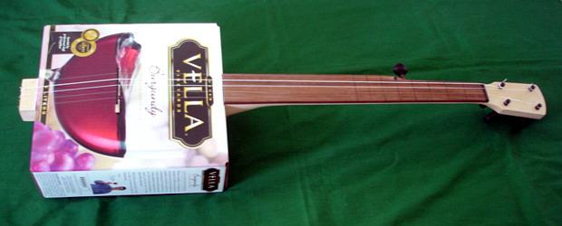
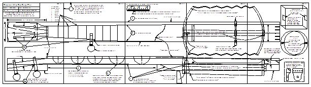
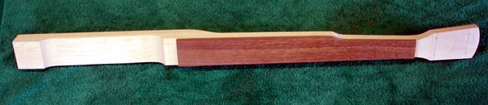
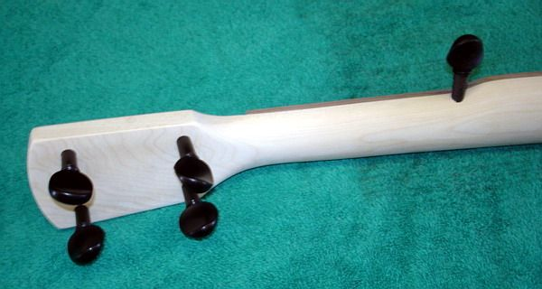

Select your area of interest:
Home* Lap Steel* 3 String Guitar* "Regular" Guitar* Violin* Bass*Banjo* Mandolin* Ukulele* Home Recording* Links
Open Back Banjo:
Traditional & progressive design & construction information
Boucher Early Minstrel Banjo (construction guide on CD & full size plan available)Frank Profitt Mountain Banjo
Bluestem Mountain Banjo Nouveau
Bluestem Artisan Mountain Banjo
Bluestem Open Back Banjo Nouveau
Bluestem Wine Box / Hand Drum Banjo
Open Back Banjo Design Primer
General Banjo Construction Information
Open Back Banjo Setup Guide
“Why can’t I get this thing to play in tune?” (more than you wanted to know about equal temperament)
Bluestem Open Back Banjo (construction guide on CD & full size plan available)
Bluestem Workingpersons 11 Slot Head Open Back Banjo (construction guide on CD & full size plan available)
Bluestem Wood Top Banjo Information (full size plan available)
*****************************************
Bluestem Wine Box Banjo Plan and Construction Notes
*****************************************

Africa has its "Palm Wine Guitar" tradition, so here is a chance to start your own tradition by knocking out a "Wine Box Banjo" for yourself. The boxes are VERY sturdy and cry out to be repurposed. They can be broken down and reassembled inside-out if you prefer your banjos a bit more of the earth-tone variety.
The plan presented here can be used to make a 23" short scale five string fretless nylon strung banjo when used in conjunction with an appropriately sized "Box Wine" container, but there's also nothing preventing you from using the basic plan and incorporating something other than a wine box. The central portion could be used with a gourd, gasoline can, or whatever creative banjo form you can think up.
The wood sizes used are commonly available at your local big box home improvement store so it won't be necessary to go on the hunt for special sizes. The few specialty items such as wood violin pegs, "Aquilla Nylgut Classical" synthetic strings, and an inexpensive banjo bridge are available from on-line suppliers such as Elderly Instruments. The plan has all of the information necessary to build the instrument, and is about as simple of a project as you're likely to find. After making the neck it becomes a simple matter of cutting a few openings in the box, inserting the neck, and gluing two end areas of the top of the box to the two flat areas of the neck extension. The end of the extension area protrudes through the box to serve as the anchor point for the strings. Add a simple bridge and you're ready to play.
I've got a bit of banjo building under my belt and can knock one of these out in less than a day, not counting drying time for glue and finish.
It actually sounds pretty good for an instrument made from a cardboard box! I have used a Vella Burgundy box here to suit my three finger style, but the Cabernet Sauvignon box seems to produce a superior tone for frailing. YMMV, of course.
Construction Plan:

Click HERE for Bluestem Wine Box Banjo Plan (Panel #1) in PDF format.
Click HERE for Bluestem Wine Box Banjo Plan (Panel #2) in PDF format.
Click HERE for Bluestem Wine Box Banjo Plan (Panel #3) in PDF format.
Click HERE for Bluestem Wine Box Banjo Plan (Panel #4) in PDF format.
Click HERE for Bluestem Wine Box Banjo Plan (Panel #5) in PDF format.
Download and print the 5 PDF files and assemble them to make a full size construction guide. Be sure to check the size of the printed outline box for each page and make certain that they each measure 10"" high by 7-1/2" wide. If there is a printing discrepancy make sure that you have "No Scaling" selected in the PDF print menu. Cut along the sides of the outline boxes and assemble them with tape to produce the full size 10" by 37-1/2" plan. Follow the directions shown on the plan and you'll have a playable banjo in no time at all.Construction notes:
1. Cut the pieces to the indicated lengths and 2-1/2" in width. Glue the short pieces on as shown to increase the thickness at the peg head and body areas. Add the finger board and cut the entire side profile. Lay out the entire top profile and cut it to shape. You're half the way home...
2. Shape the rear profile of the neck. This can be done a number of ways, one of the simplest ways being the use of a round Microplane or Surform rasp to rough out the neck shape. The contours can be checked by using a gauge made by transferring the shapes on the plan to thin plastic and cutting out the neck contour shapes with scissors or a sharp hobby knife. The neck is sanded with progressively finer grades of sandpaper to refine the shape to its finished profile.
Fit the wood violin tuning pegs by making tapered holes for them to fit into. The tapered holes can be produced by a peg reamer, but they can also be more laboriously fitted by placing sandpaper around a peg and twisting until a tapered hole is produced. Yes, it's work, but like it is said, nothing worth having comes easily. (Unless you happen to own a peg reamer...) You may want to purchase an extra violin peg to create an ideally sized "sandpaper reamer" to use for the fitting of the fifth peg.
The fifth string peg is shortened a bit by cutting off about 1/2" of the shaft length before fitting so it doesn't stick out too far.
After pegs 1 through 4 are fitted then the excess length can be cut off so only 3/8" protrudes above the peg head surface. Small holes can be drilled in all 5 pegs to receive the strings. I've found that drilling two small holes in the fifth peg about an 1/8" apart allows the tail to be trapped and locked under the resulting loop when the string is passed first through one hole and then brought up through the other.

3. Cut appropriate openings in the box of your choice and drill the string holes in the protruding end. Add a simple wood nut and temporarily attach a set of strings. Nylon strings are VERY slippery and require a little care when they are attached to keep them from slipping. See the diagram below for the proper way to attach them at each end. They also stretch A LOT, so don't add any extra turns around the tuner post initially. They will end up with several turns by the time they stretch out and stabilize. This will usually take day or two. You can use a cheap $3 set of nylon strings for the initial setup and replace them with better strings after the banjo is permanently assembled.
Measure the scale length distance from the front edge of the nut and place the bridge in this position. Note: If you are not drawing the "fret" positions on the finger board then this positioning is not critical and the bridge can be placed in the approximate position by sight. The strings should be about 1/8" to 3/16" above the finger board at the box end. Check to see if everything is OK and the banjo is playable. If no further tweaking is necessary you can now disassemble (number the pegs before removing them), sand the neck, and apply finish. Don't apply finish to the area of the neck extension where the box will be glued to. A coat or two of "Tru-Oil" gun stock finish (usually available in the sporting goods section at Wal-Mart or other equally fine establishments) is super easy to apply and works well as a finish. Reassemble your creation using a bit of glue to hold the box in place permanently. Add your Nylgut Classical strings (LaBellas will suffice if you're on a REALLY tight budget) and you're done! Time to tap a new box o' wine, tune and play the old one...
**************** ATTACHING STRINGS ****************
How to attach strings so they don't slip when tightened. The diagram should be more or less self-explanatory.
**************** TUNING ****************
My preferred Wine Box tuning is e-A-E-A-B (fifth string to first string).**************** TRAVEL / CAMPING / LATE NIGHT BANJO ****************
The plans referanced above also show details for using an inexpensive Remo pre-tensioned Fibreskyn 3 hand drum to make a spiffy travel banjo as shown here:
This banjo can be made with a 10" by 2" as shown or a larger 12" by 2-1/2" hand drum can also be used by making the tail piece end of the neck slightly longer. You can view additional photo images and pick up some tips on making this banjo by visiting my home page at Banjohangout.org.
*****************************************
Please visit my other website designed to provide information on musical instrument construction. There are free plans as well as construction tips and techniques available at the present time.Rudy's Sketchbook of Musical Instrument Plans, Ideas, and Inspiration

If you desire to contact me about Bluestem Strings products:
Due to scoundrelous spammers actively mining sites for e-mail addresses, I'm forced to include the following text version of my e-mail address meant to confuse the automated robo-search of websites for e-mail addresses. Please e-mail me at:rcordle (substitute the at symbol here) fastmail (substitute the dot here) fm
Please include "Bluestem Info Request" in the subject line, Thanks!